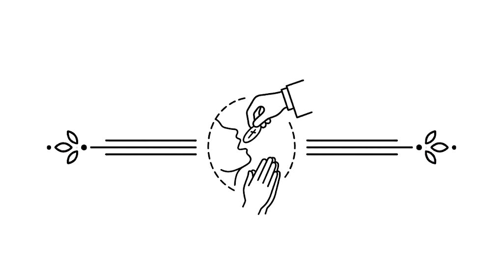

20
Bij się w piersi i mów wraz z kapłanem:
Panie, nie jestem godzien, abyś wszedł do wnętrza mego, ale rzeknij tylko słowem, a będzie uzdrowiona dusza moja. (×3)
Dómine, non sum dignus, ut intres sub tectum meum: sed tantum dic verbo, et sanábitur ánima mea. (×3)
Kapłan podając Komunię Świętą mówi sam całą formułę, łącznie z końcowym „Amen”. Przyjmujący nie odpowiada „Amen”, lecz w milczeniu przyjmuje Komunię na język.

Ciało Pana naszego Jezusa Chrystusa niechaj strzeże duszy twojej na żywot wieczny. Amen.
Corpus Dómini nostri Iesu Christi custódiat ánimam tuam in vitam ætérnam. Amen.

Modlitwy po Komunii
K. Pan z wami.
W. I z duchem twoim.
K. Módlmy się.
S. Dóminus vobíscum.
M. Et cum spíritu tuo.
S. Orémus.
POKOMUNIA
Prosimy Cię, wszechmogący Boże, racz darzyć ojcowską opieką związek przez Ciebie ustanowiony i przez długie lata strzeż w pokoju tych, których złączyłeś w prawowitym małżeństwie. Przez Pana naszego Jezusa Chrystusa, Syna Twojego, który z Tobą żyje i króluje w jedności Ducha Świętego, Bóg, przez wszystkie wieki wieków.
W. Amen.
Quaesumus, omnipotens Deus: instituta providentiae tuae pio favore comitare; ut, quos legitima societate connectis, longaeval pace custodias. Per Dóminum nostrum Iesum Christum Fílium tuum, qui tecum vivit et regnat in unitáte Spíritus Sancti Deus, per ómnia sǽcula sæculórum.
M. Amen.
Kapłan odczytuje modlitwę Postcommunio.
K. Pan z wami.
W. I z duchem twoim.
K. Idźcie, Ofiara skończona.
W. Bogu niech będą dzięki.
S. Dóminus vobíscum.
M. Et cum spíritu tuo.
S. Ite, missa est.
M. Deo grátias.